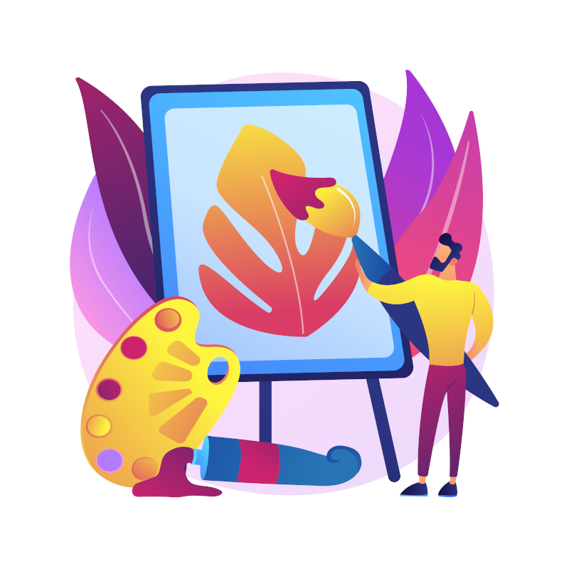

Lucas é um adulto de 27 anos que ama artes, um amor que herdou de seu falecido pai.
Ele está finalizando seu doutorado em Artes Digitais, depois de anos felizes na Universidade Wenger, em que pode aprender tanto sobre aquilo que tanto amava
Dado o renome desta universidade, Lucas teria muitas e muitas oportunidades no mercado, além de diversas pessoas quererem suas obras de arte.
Lucas gostaria de entrar em uma empresa, ser chefe de design, ou alguma grande profissão.
Mas no fundo, também tinha vontade de ser um artista independente.
O que Lucas deveria fazer?